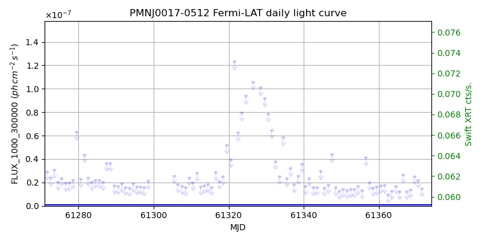

LAT Lightcurve site: https://fermi.gsfc.nasa.gov/ssc/data/access/lat/msl_lc/source/PMN_J0017-0512
Swift site: https://www.swift.psu.edu/monitoring/source.php?source=PMNJ0017-0512
NED: Query
Time of last update of this page: UT: 2026-11-20 16:11 (MJD: 61364.674)
| Property | Value |
|---|---|
| R.A. | 0:17:35.76 |
| Dec. | -5:12:43.2 |
| z | 0.227 |
| 3FGL SpectrumType | PowerLaw |
| 3FGL PL Index | 2.51 |
| 3FGL Flux_100_300000 | 2.55e-08 1 / (s cm2) |
| 3FGL Flux_1000_300000 | 7.96e-10 1 / (s cm2) |
| 3FGL Flux >200 GeV | 2.72e-13 1 / (s cm2) |
| 3FGL Extrap. Crab >200 GeV | 0.00 |
| 3FGL Flux After EBL Absorption >200GeV | 1.27e-13 1 / (s cm2) |
| 3FGL EBL Crab Fraction >200GeV | 0.00 |
| MJD | dMJD | Flux | dFlux | Frac3FGL | FracCrab>200GeV | EBLFracCrab>200GeV |
|---|---|---|---|---|---|---|
| 61359.50 | 0.50 | 1.28e-07 | 0.00e+00 | 0.00 | 0.00 | 0.00 |
| 61360.50 | 0.50 | 1.18e-07 | 0.00e+00 | 0.00 | 0.00 | 0.00 |
| 61361.50 | 0.50 | 9.15e-08 | 0.00e+00 | 0.00 | 0.00 | 0.00 |
| 61362.50 | 0.50 | 3.99e-07 | 0.00e+00 | 0.00 | 0.00 | 0.00 |
| 61363.50 | 0.50 | 9.20e-08 | 0.00e+00 | 0.00 | 0.00 | 0.00 |

| MJD | dMJD | Flux | dFlux | Frac3FGL | FracCrab>200GeV | EBLFracCrab>200GeV |
|---|---|---|---|---|---|---|
| 61328.50 | 3.50 | 1.92e-07 | 0.00e+00 | 0.00 | 0.00 | 0.00 |
| 61335.50 | 3.50 | 2.11e-08 | 0.00e+00 | 0.00 | 0.00 | 0.00 |
| 61342.50 | 3.50 | 1.33e-07 | 0.00e+00 | 0.00 | 0.00 | 0.00 |
| 61349.50 | 3.50 | 6.28e-08 | 0.00e+00 | 0.00 | 0.00 | 0.00 |
| 61356.50 | 3.50 | 2.28e-08 | 0.00e+00 | 0.00 | 0.00 | 0.00 |

| MJD | dMJD | Flux | dFlux | Frac3FGL | FracCrab>200GeV | EBLFracCrab>200GeV |
|---|---|---|---|---|---|---|
| 61359.50 | 0.50 | 1.62e-08 | 0.00e+00 | 0.00 | 0.00 | 0.00 |
| 61360.50 | 0.50 | 1.75e-08 | 0.00e+00 | 0.00 | 0.00 | 0.00 |
| 61361.50 | 0.50 | 1.79e-08 | 0.00e+00 | 0.00 | 0.00 | 0.00 |
| 61362.50 | 0.50 | 9.37e-09 | 0.00e+00 | 0.00 | 0.00 | 0.00 |
| 61363.50 | 0.50 | 1.27e-08 | 0.00e+00 | 0.00 | 0.00 | 0.00 |

| MJD | dMJD | Flux | dFlux | Frac3FGL | FracCrab>200GeV | EBLFracCrab>200GeV |
|---|---|---|---|---|---|---|
| 61328.50 | 3.50 | 2.47e-08 | 0.00e+00 | 0.00 | 0.00 | 0.00 |
| 61335.50 | 3.50 | 9.29e-09 | 0.00e+00 | 0.00 | 0.00 | 0.00 |
| 61342.50 | 3.50 | 3.09e-09 | 0.00e+00 | 0.00 | 0.00 | 0.00 |
| 61349.50 | 3.50 | 3.08e-09 | 0.00e+00 | 0.00 | 0.00 | 0.00 |
| 61356.50 | 3.50 | 2.86e-09 | 0.00e+00 | 0.00 | 0.00 | 0.00 |
--------------------------------------------------------- Using user-supplied coords: 0:17:35.76 -5:12:43.2 2000 --------------------------------------------------------- FLWO UT night of: 2026-11-21 Local Sid. @ Midnight: 03:37 Sunset (-15.0) (local, UT): 18:33 01:33 Sunrise (-15.0) (local, UT): 05:47 12:47 Moonrise (local, UT): Moonset (local, UT): 03:40 10:40 Moon phase: 0.85 --------------------------------------------------------- AzTime LSID UT Obj_el Obj_az Mn_el Mn_az Sep. --------------------------------------------------------- 18:33 22:09 01:33 42.0 134.0 47.9 117.4 13.1 19:03 22:39 02:03 46.3 142.6 53.3 125.0 13.3 19:33 23:09 02:33 49.7 152.5 58.2 134.7 13.5 20:03 23:39 03:03 52.1 163.8 62.3 146.9 13.7 20:33 00:09 03:33 53.2 176.0 65.1 162.1 13.8 21:03 00:39 04:03 53.0 188.5 66.3 179.7 14.0 21:33 01:09 04:33 51.4 200.4 65.4 197.5 14.2 22:03 01:39 05:03 48.6 211.2 62.9 213.2 14.4 22:33 02:09 05:33 44.8 220.7 59.0 225.9 14.5 23:03 02:39 06:03 40.3 228.8 54.2 235.9 14.7 23:33 03:09 06:33 35.2 235.8 48.9 243.9 14.9 00:03 03:39 07:03 29.7 241.9 43.2 250.4 15.1 00:33 04:10 07:33 24.0 247.2 37.3 255.9 15.2 01:03 04:40 08:03 18.0 252.0 31.2 260.7 15.4 01:33 05:10 08:33 11.9 256.4 25.1 265.1 15.6 02:03 05:40 09:03 5.7 260.6 19.0 269.2 15.8 02:33 06:10 09:33 -0.2 264.6 12.9 273.0 16.0 03:03 06:40 10:03 -7.2 268.5 6.8 276.9 16.2 03:33 07:10 10:33 -13.6 272.5 1.0 280.7 16.5 04:03 07:40 11:03 -20.0 276.6 -4.9 284.7 16.7 04:33 08:10 11:33 -26.3 280.9 -11.1 288.8 16.9 05:03 08:40 12:03 -32.5 285.7 -16.8 293.2 17.2 05:33 09:10 12:33 -38.6 291.1 -22.3 298.1 17.4 05:47 09:25 12:47 -41.4 294.0 -24.8 300.5 17.5 --------------------------------------------------------- Source never above horizon of 55.0 deg. Dark hours >55 deg.: 0.00